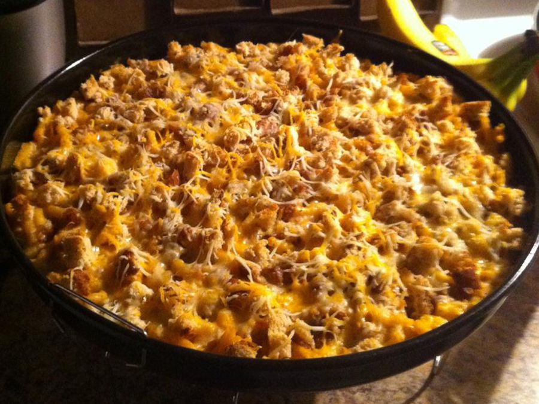

Macaroni Casserole

Description
This tuna and macaroni casserole is super easy to make, very creamy, and
flavorful. It makes for a hearty and delicious bowl of comfort food.
Follow this recipe for a mouth watering delicacy.
Ingredients
- 1 (7.25 ounce) package macaroni and cheese
- ¼ cup butter
- ¼ cup milk
- 1 (10.5 ounce) can cream of mushroom soup
- 1 (5 ounce) can tuna, drained and flaked
- ½ cup milk
- 1 cup shredded Cheddar cheese
- 1 tablespoon minced fresh parsley, or to taste (Optional)
- ¼ cup bread crumbs
- ¼ cup butter, melted
- ½ teaspoon dried dill weed, or to taste (Optional)
Steps
-
Preheat the oven to 350 degrees F (175 degrees C). Grease a 2-quart
baking dish.
-
Bring a large pot of lightly salted water to a boil. Cook elbow macaroni
in the boiling water, stirring occasionally until cooked through but
firm to the bite, 8 minutes. Drain and return macaroni to the pot.
-
Stir in 1/4 cup butter, 1/4 cup milk, and the envelope of powdered
cheese from the package. Add mushroom soup, tuna, and 1/2 cup milk; stir
to combine. Pour macaroni mixture into the prepared baking dish; top
with Cheddar cheese and parsley.
-
Mix bread crumbs, 1/4 cup melted butter, and dill in a small bowl;
sprinkle over Cheddar cheese layer.
-
Bake in the preheated oven until cheese is melted and the top is golden
brown, about 20 minutes.